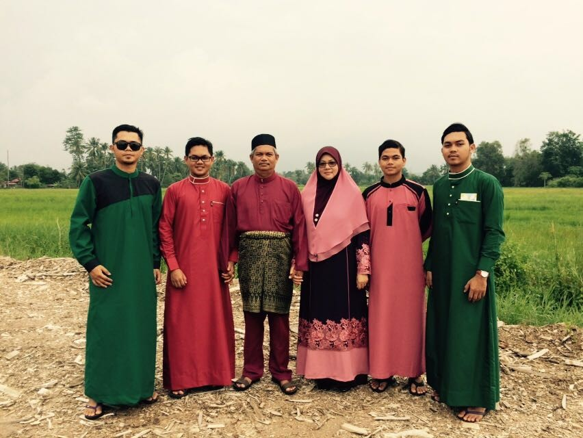

AIMAN ABDULLAH

People In this picture is My Lovely Family.The middle one is my dad,Abdullah bin Abdul Rahman,my dad is 56 years old and now he is a businessman because I have my own restaurant that my dad open.The between my dad and I,of course is my mother,Noraini binti Darus,my mother is also 56 years old and she is a very responsible woman to take care all about my family as a housewife. As I said,I was the youngest one from my 3 brothers . The boy who wear a black spectacle is My eldest brother,Muhammad Aizat bin Abdullah and now he is 26 years old.He was succesfully graduated the degree in science sport management at Universiti Teknologi Shah Alam and got the Anugerah Naib Counselor(ANC) in his degree.Now he is work at the Majlis Sukan Wilayah Persekutuan as a sports officer.After that,next me is my second brother,Muhammad Azim Bin Abdullah,he is 24 years old and he also succesfully graduated Diploma in Office management at Universiti Teknologi Mara Lendu,Melaka.Now he is work with my father to manage my family’s restaurant and also has his own business.My third brother is between My eldest brother and my dad,Muhammad Afiq bin Abdullah,he is 20 years old,he is most clever genius boy in my family because he got straight A and 7A+ in his Sijil Pelajaran Malaysia and got the sponsorship from petronas.now,he studies at University Of Manchester,United Kingdom in cost mechanical engineering. I'm the youngest one be proud to have a brother that I can follow to make my parents happy.